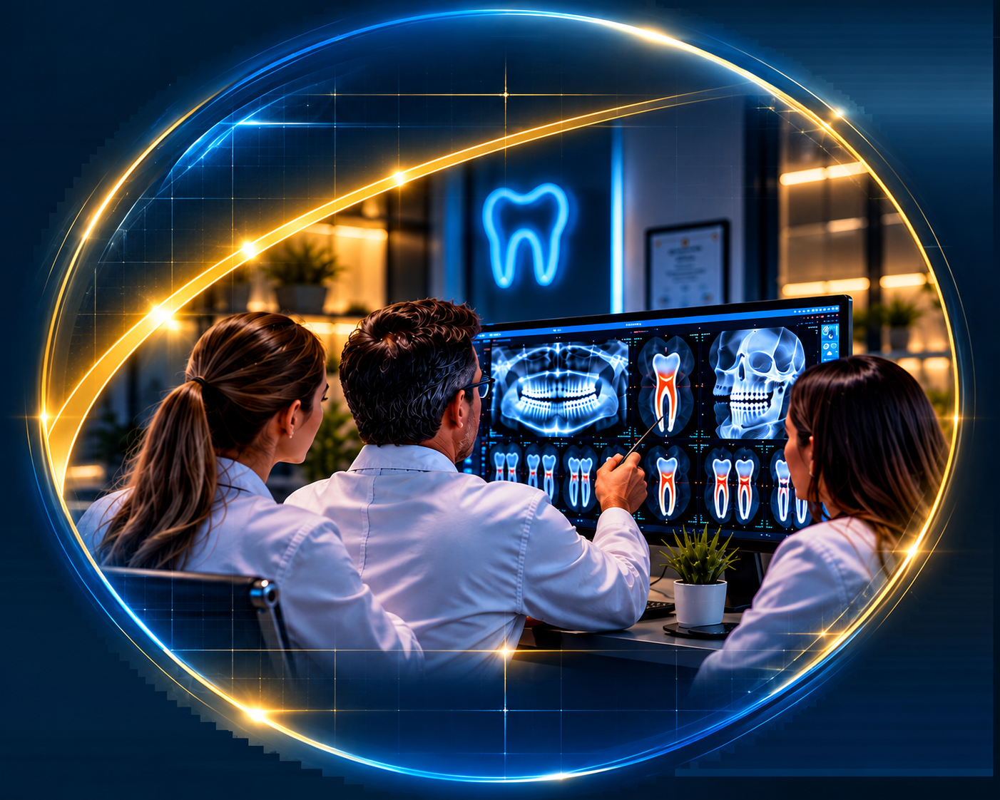

A EQUIPE
Nossa equipe é formada por cirurgiões-dentistas especialistas em Radiologia Odontológica e Imaginologia, devidamente inscritos nos respectivos Conselhos Regionais de Odontologia, com vasta experiência em diagnóstico por imagem e prática clínica odontológica.
